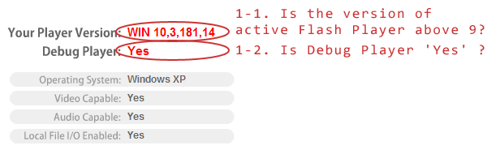
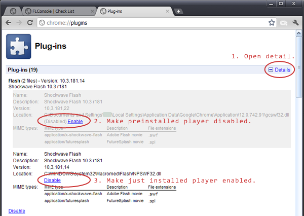

1. Flash Player Setting
Open this page Find Flash Player version, and
check
this list.
- Is the version of active Flash Player above 9 ?
- Is Debug Player 'Yes' ?

If not, install Debugger Player from
Adobe Flash Player - Downloads,
and make Debugger Player enabled from chrome://plugins/.

2. FLConsole Setting
- Do these files exist? These files are expected to be generated
by FLConsole.
- If these files exist, delete or move to somewhere else.
- Restart Chrome.
Vista/7
- C:\Users\{USER_NAME}\mm.cfg
- C:\Users\{USER_NAME}\AppData\Roaming\Macromedia\Flash
Player\#Security\FlashPlayerTrust\FLConsole.cfg
- C:\Users\{USER_NAME}\AppData\Roaming\Macromedia\Flash
Player\Logs\flashlog.txt
XP
- C:\Documents and Settings\{USER_NAME}\mm.cfg
- C:\Documents and Settings\{USER_NAME}\Application
Data\Macromedia\Flash Player\#Security\FlashPlayerTrust\FLConsole.cfg
- C:\Documents and Settings\{USER_NAME}\Application
Data\Macromedia\Flash Player\Logs\flashlog.txt